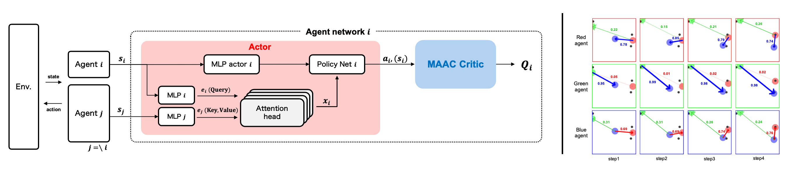
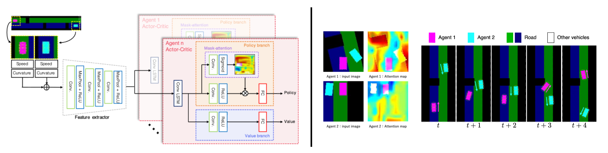
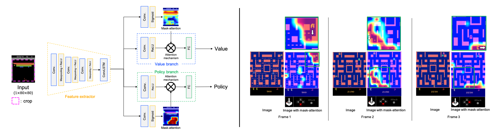
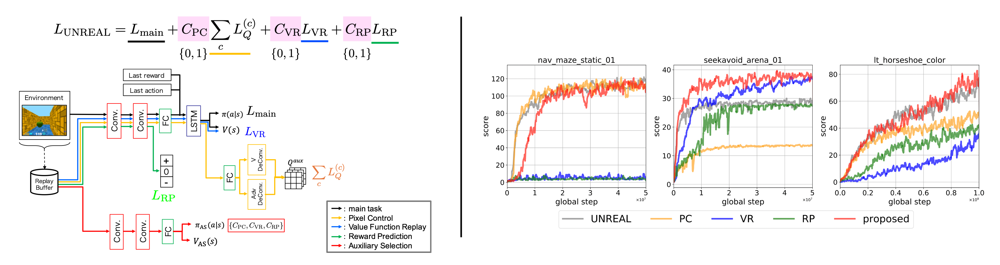

Visual explanation in MARL [ IJCNN2023 ]
Multi-agent reinforcement learning (MARL) can acquire cooperative behavior among agents by training multiple agents in the same environment.
Therefore, it is expected to be applied to complex tasks in real environments, such as traffic signal control in a traffic environment and cooperative behavior of robots.
In this study, using the multi-actor-attention-critic (MAAC) with the actor-critic method as a basis, we introduce an attention head for the actor that calculates the agent's action.
In contrast to the critic in MAAC, which shares the attention head among all the agents, the attention head of the actor in our method is constructed independently for each agent.
This allows the attention head of the actor to calculate actor-attention (indicating which other agents are gazed at by each agent) and to acquire cooperative behavior.
We visualize actor-attention to analyze the basis of agents' decisions for cooperative behavior.
Using single spread, which is a multi-agent environment for cooperative problems, we show that the basis of decisions for cooperative behavior can be easily analyzed.
We also demonstrate that our method efficiently obtains cooperative behavior considering other agents through quantitative evaluation of the cooperative behavior.

Solving the Deadlock Problem with DRL [ IV2022 ]
Autonomous driving system controls a vehicle using path planning.
Path planning for automated vehicles observes a vehicle and the surrounding information and plans a trajectory on the basis of rule-based approach.
However, the rule-based path planning cannot generate an appropriate trajectory for complex scenes, such as two vehicles passes each other at an intersection without traffic lights.
Such complex scene is called deadlock. For avoiding the deadlock, it is very costly to create rules manually.
In this paper, we propose a multi-agent deep reinforcement learning method to generate appropriate trajectories at the deadlock scenes.
The proposed method consists of a single feature extractor and actor-critic branches. Moreover, we introduce a mask-attention mechanism for visual explanation.
By taking a look at the obtained attention maps, we can confirm the obtained agent and the reason of the behavior.
For evaluating our method, we develop a simulator environment of autonomous driving that produces a certain deadlock scene.
The experimental results with the developed environment show that the proposed method can generate trajectories avoiding deadlocks.

Mask-attention A3C [ JSAI2020 ] [ IJCNN2021 ]
Deep reinforcement learning (DRL) has great potential for acquiring the optimal action in complex environments such as games and robot control.
However, it is difficult to analyze the decision-making of the agent, i.e., the reasons it selects the action acquired by learning.
In this work, we propose Mask-Attention A3C (Mask A3C), which introduces an attention mechanism into Asynchronous Advantage Actor-Critic (A3C), which is an actor-critic-based DRL method, and can analyze the decision-making of an agent in DRL.
A3C consists of a feature extractor that extracts features from an image, a policy branch that outputs the policy, and a value branch that outputs the state value.
In this method, we focus on the policy and value branches and introduce an attention mechanism into them.
The attention mechanism applies a mask processing to the feature maps of each branch using mask-attention that expresses the judgment reason for the policy and state value with a heat map.
We visualized mask-attention maps for games on the Atari 2600 and found we could easily analyze the reasons behind an agent's decision-making in various game tasks.
Furthermore, experimental results showed that the agent could achieve a higher performance by introducing the attention mechanism.

Auxiliary selection [ JSAI2019 ] [ IJCAI2019 2nd SURL workshop ] [ IEVC2024 ]
Deep reinforcement learning (RL) has a difficulty to train an agent and to achieve higher performance stably because complex problems contain larger state spaces.
Unsupervised reinforcement learning and auxiliary learning (UNREAL) has achieve higher performance in complex environments by introducing auxiliary tasks.
UNREAL supports the training of the main task by introducing auxiliary tasks in addition to main tasks during the training phase.
However, these auxiliary tasks used in UNREAL are not necessarily effective in every problem setting.
Although we need to design auxiliary tasks that are effective for a target tasks, designing them manually takes a considerable amount of time.
In this paper, we propose a novel auxiliary task called "Auxiliary selection".
Our auxiliary selection adaptively selects auxiliary tasks in accordance with the task and the environment.
Experimental results show that our method can select auxiliary tasks and can train a network efficiently.

{kind=link}
{kind=link}
{kind=link}
{kind=link}